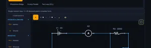
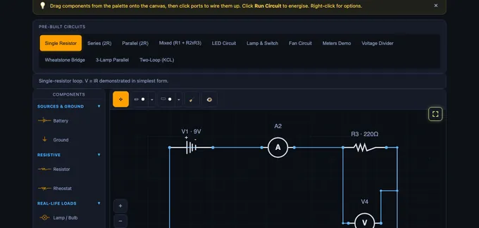

Ohm’s Law Calculator & DC Circuit Builder
V·I·R·P Calculator • Series & Parallel • Voltage Divider • Drag-&-Drop DC Circuits • Animated Current • Internal Resistance • Fuses • MNA Solver
1 Overview
The Ohm’s Law & DC Circuits Simulator is a free, browser-based interactive tool for building and analysing direct-current circuits. Drag components from the palette — batteries, resistors, lamps, LEDs, fans, switches, ammeters, voltmeters — onto the canvas, wire them up by clicking ports or tapping anywhere along an existing wire, click a component to open a floating edit popover, and watch animated current flow in real time. It covers V = IR, Kirchhoff’s Laws (KCL and KVL), series and parallel resistance, voltage dividers, and power dissipation.
The simulator uses a full circuit solver (Modified Nodal Analysis — the same algorithm behind professional SPICE tools) so any topology you can draw will be solved, not just presets. Each node’s voltage is computed, each branch’s current is computed, and the results drive animated current dots and live voltage/current readouts on every component. Before energising, a fault-detection pass catches common wiring mistakes — shorts, conflicting batteries, ammeters across loads, duplicate wires, open loops — and flashes the offending parts red with an explanatory banner. Designed for electrical engineering students, physics learners, vocational trainees, and instructors.
2 Building the Circuit

Drag a component from the palette on the left onto the canvas. Start with a Battery, add one or more Resistors (or real-life loads like lamps and fans), and then click the round ports on each component to create wires between them. Click Run Circuit to energise — current dots flow along the wires, live readouts appear, and any wiring fault is highlighted in flashing red.
- Click a blank canvas point while wiring to drop a waypoint for cleaner routing.
- Tap anywhere along an existing wire to attach a new wire — a junction node is created automatically at the tap point.
- Use an explicit Junction (3-way or 4-way) component when you want a visible node.
- Load a Pre-Built Circuit pill to start from a ready example (single resistor, series, parallel, mixed, LED, Wheatstone bridge, two-loop KCL, etc.).
- Click any component to open a floating popover with a value input, unit selector, slider, and rotate / delete buttons — no side panel needed.
3 Simulate Mode & Components
Simulate mode is the free-form workspace where you build any DC circuit. Available components:
- Battery: Adjustable 1–48 V DC source with clear + and – terminals. Set an optional internal resistance to model a real cell — the readouts then report EMF, terminal voltage and lost volts (Vterminal = EMF − I·r). Multiple batteries supported — the solver handles series-aiding, series-opposing, and identical-parallel configurations.
- Resistor / Rheostat: Adjustable resistance with Ω / kΩ / MΩ unit selector.
- Lamp / Bulb: Incandescent load; brightness scales with P = V×I.
- LED: Diode with ~2 V forward drop; glows when forward-biased.
- Fan / Motor: Animated rotation proportional to current.
- Buzzer / Heater: Visual indication of power dissipation.
- Switch / Push Button: Click during simulation to toggle (open / closed).
- Fuse: Rated in amperes. Conducts as a near-zero-resistance link until the branch current exceeds its rating, then parts the circuit and names itself in the fault banner. Right-click → Replace Fuse to reset it.
- Ammeter: Reads branch current in series — wiring it in parallel is now caught as a fault before Run.
- Voltmeter: Reads node-to-node voltage in parallel — wiring it as the only return path is caught as an open-loop fault.
- Junction: 3- or 4-way wire splitter/combiner.
- Ground: Reference node (0 V).
The readouts show supply voltage (or EMF when a cell is non-ideal), total current, equivalent resistance, total power, component count, and status — plus terminal voltage and lost volts whenever a battery has internal resistance. Verify KVL (voltage drops around a loop sum to 0) and KCL (currents at a junction sum to 0) by reading the on-canvas labels.
4 Click-to-Edit Component Popover
Click any component on the canvas to open a floating edit popover anchored right next to it. It lets you change the component without ever leaving the canvas:
- Value field — type an exact value (e.g.
470,9,2.2). - Unit selector — pick Ω / kΩ / MΩ for resistors, V / kV / MV for batteries. The stored SI value updates automatically.
- Slider — drag for fast adjustment while watching readings update live.
- Rotate — cycle 0° → 90° → 180° → 270°.
- Delete — remove the component and all its wires.
The popover hides while you drag the component and re-appears at the new position on drop. Click elsewhere or press Esc to dismiss.
5 Fault Detection & Diagnostics
Hit Run Circuit on a broken wiring and the faulty components plus their wires flash red, and a red warning banner explains the issue in plain language. The engine runs two passes:
Pre-flight topology check — catches problems before the solver even runs:
- No battery — nothing to energise.
- Hard short across a battery — – terminal wired directly to + without any load.
- Disconnected battery terminal — an unwired + or – pole.
- Conflicting parallel batteries (KVL violation) — two batteries of different voltage wired directly in parallel.
- Ammeter in parallel with a load — a near-zero-Ω ammeter across a resistor shorts it out and in real life would blow the meter fuse.
- Duplicate wires between the same two ports — distorts readings.
Post-solve numerical check — catches problems only visible after solving:
- Open loop / no current — battery is live but no complete conductive path back (e.g. an open switch in the only loop).
- Voltmeter as the only return path — a voltmeter’s near-infinite resistance cannot carry load current; the hint tells you exactly this.
- Singular / ill-conditioned configurations — the solver aborts cleanly instead of returning nonsense.
The identical-parallel-batteries case is handled silently by the solver (treated as one source), not flagged as an error.
6 Canvas Tools & Annotations
Annotation Toolbar: Move (select, drag, resize), Sketch (freehand with 6 colours & 3 widths; the pencil cursor stays active for continuous drawing), and Shapes (rectangle, circle, ellipse, line, arrow, double arrow, text label). Picking a shape from the dropdown activates it for a single placement. Click any annotation to select it — a dashed box with corner handles appears; drag inside to move, corners to resize (including text labels), use the action icons above to rotate / duplicate / delete. Double-click text to edit.
Zoom & Pan: Toolbar buttons or Ctrl = / Ctrl - / Ctrl 0 / Ctrl 1. Hold H or toggle the ✋ pan button for pan mode. Ctrl+Scroll zooms; pinch-to-zoom on touch.
Export & Toggle: The 📷 button exports the canvas as a PNG with watermark. The 👁 eye toggles annotation visibility. The 🧹 button clears annotations with a category chooser (all, sketches only, shapes & text only).
Fullscreen: Click the yellow fullscreen button (top-right) to expand the simulator to the full viewport — it changes to a red × while active so you can close it at a glance, or press Esc.
7 Explore, Practice & Quiz
Explore provides structured content across Fundamentals (Ohm’s Law, current, voltage, resistance), Laws (KCL, KVL, power, series), and Components (parallel, voltage divider, current divider, conductance) — each with formula, description, and worked example.
Practice offers 12 randomised problem types on V=IR, series/parallel totals, dividers, and power, with step-by-step solutions.
Quiz gives 5 randomly selected questions from a pool of 15 MCQ + numeric questions with instant grading.
8 Calculate Mode — Ohm’s Law & Resistance Calculators
The Calculate tab holds four calculators that work without drawing anything:
- Ohm’s Law calculator: type any two of V, I, R and P and the other two appear, highlighted, with the formula and the substituted numbers shown underneath. Each field has its own unit selector, so mA and kΩ are handled for you. Typing a third value retires the oldest entry, so you can keep exploring without clearing.
- Formula wheel: all twelve rearrangements of V = IR and P = VI, grouped by the quantity you are solving for.
- Series & parallel calculator: add as many resistors as you need and see both equivalent resistances side by side. Enter a supply voltage and it also lists the current through each parallel branch.
- Voltage divider calculator: Vin, R1 and R2 give Vout, loop current and the power in each resistor. The optional Rload field shows how much a real load pulls the output down.
Build This Circuit (and Build This Divider) hand the calculated values straight to the canvas as a wired circuit, so you can confirm the arithmetic against a full MNA solve.
9 Keyboard Shortcuts & Tips
Circuit: Space = Run/Stop, Ctrl+Z = Undo, Ctrl+Shift+Z = Redo, R = Rotate, D = Duplicate, Delete/Backspace = Delete, Esc = Cancel / dismiss popover / exit fullscreen.
Zoom/Pan: Ctrl+= In, Ctrl+- Out, Ctrl+0 Reset, Ctrl+1 Fit, H Pan toggle, Esc Exit pan.
- Every circuit needs a closed loop from + to – of the battery — an open loop triggers the post-solve fault banner.
- Always put a series resistor with an LED to limit current (typical 150–470 Ω).
- Wire an Ammeter in series, a Voltmeter in parallel. The wrong orientation is now flagged before Run.
- Use the Rheostat or the popover slider to sweep resistance live while the simulation runs and watch the V / I response.
- Give a battery an internal resistance in its popover to model a real cell — the readouts then show terminal voltage and lost volts alongside the EMF.
- Add a Fuse from the palette and set its rating in amperes; exceed it and the fuse parts the circuit. Right-click it and choose Replace Fuse to reset.
- Verify KVL: voltage drops across series resistors should sum to the supply voltage.
- Verify KCL: at any junction, incoming currents = outgoing currents.
- Match battery voltages exactly if you want to parallel them — conflicting voltages are caught as a KVL violation.
Understanding Ohm’s Law — Free Interactive DC Circuit Simulator

Ohm’s Law states that voltage equals current times resistance: V = I × R. To find current, use I = V/R. To find resistance, use R = V/I. Power is calculated as P = V × I. These four equations form the basis of all DC circuit analysis in electrical engineering.
Ohm’s Law is the foundational equation of electrical engineering: V = IR, where V is voltage in volts, I is current in amperes, and R is resistance in ohms. It tells us that the current flowing through a conductor is directly proportional to the voltage across it and inversely proportional to its resistance. This simple relationship governs everything from LED circuits to industrial power distribution. Our interactive simulator lets you build arbitrary DC circuits from batteries, resistors, lamps, LEDs, fans, switches, ammeters and voltmeters, and observe how voltage, current, and resistance interact in real time with animated current dots flowing through the wires.
Kirchhoff’s Laws — KCL and KVL
Kirchhoff’s Current Law (KCL) states that the total current entering a junction equals the total current leaving it — charge is conserved. Kirchhoff’s Voltage Law (KVL) states that the sum of all voltage drops around any closed loop equals the supply voltage — energy is conserved. In our simulator, you can verify both laws by building series and parallel circuit configurations. In a series circuit, the same current flows through every resistor and voltages add up to the supply. In a parallel circuit, the same voltage appears across every branch and currents add up to the total.
Series, Parallel & Mixed Circuits
A series circuit has all components connected end-to-end, so Rₙₒₙ = R1 + R2 + ... and the current is the same everywhere. A parallel circuit has components connected across the same two nodes, so 1/Rₙₒₙ = 1/R1 + 1/R2 + ... and the voltage is the same across every branch. A mixed circuit combines both topologies — for example, R1 in series with a parallel combination of R2 and R3. The simulator calculates total resistance, individual voltage drops, branch currents, and power dissipation for each component automatically using Modified Nodal Analysis.
Using the Ohm’s Law Calculator — Solve V, I, R and P
Open the Calculate tab and enter any two of the four quantities; the calculator returns the other two and shows the formula it used. Enter 12 V and 4 Ω and it returns 3 A and 36 W. Enter 100 W and 4 Ω and it returns 20 V and 5 A. Each input has its own unit selector (mV/V/kV, µA/mA/A, Ω/kΩ/MΩ, mW/W/kW), so a 40.9 mA reading against 9 V correctly returns 220 Ω without any manual conversion. Press Build This Circuit and the same values are drawn on the canvas as a real battery-and-resistor loop with an ammeter and voltmeter already wired in, so you can check the arithmetic against a full circuit solve.
The Ohm’s Law Wheel — All 12 Formulas
The four quantities V, I, R and P give twelve rearrangements in total. Pick the row that contains the two values you already know:
| Known values | Voltage V | Current I | Resistance R | Power P |
|---|---|---|---|---|
| V and I | — | — | R = V ÷ I | P = V × I |
| V and R | — | I = V ÷ R | — | P = V² ÷ R |
| V and P | — | I = P ÷ V | R = V² ÷ P | — |
| I and R | V = I × R | — | — | P = I² × R |
| I and P | V = P ÷ I | — | R = P ÷ I² | — |
| R and P | V = √(P × R) | I = √(P ÷ R) | — | — |
EMF, Internal Resistance & Terminal Voltage
No real cell delivers its full EMF under load. Every battery has an internal resistance r, and the voltage you actually measure at the terminals is Vterminal = EMF − I × r. The I × r term is known as the lost volts. Set a battery’s internal resistance in its click-to-edit popover and the readout row adds two cards: terminal voltage and lost volts. A 9 V cell with r = 1 Ω feeding a 220 Ω resistor drives 9 ÷ 221 = 40.7 mA, so it loses 0.04 V internally and its terminal voltage settles at 8.96 V. Lower the load resistance and the lost volts grow — which is exactly why a car’s headlights dim while the starter motor cranks.
Voltage Dividers — and Why Loading Them Changes the Answer
Two resistors in series across a supply divide the voltage in proportion to their resistance: Vout = Vin × R2 ÷ (R1 + R2). With 12 V across 1 kΩ and 2 kΩ, Vout is 8 V. That formula assumes nothing is connected to the output. Attach a load and it sits in parallel with R2, lowering the effective lower-leg resistance and dragging Vout down — a 2 kΩ load on that same divider pulls the output from 8 V to 6 V. The voltage divider calculator has an optional Rload field that reports both figures and the percentage drop between them, which is the single most common reason a divider “doesn’t work” on the bench.
Fuses and Circuit Protection
A fuse is a deliberate weak point: a conductor sized to melt and open the circuit once current exceeds its rating. Drag one from the Switches & Protection palette group, set its rating in amperes, and it behaves like a near-zero-resistance link until the solved branch current passes that rating — at which point it parts, the symbol shows a broken element, and the simulator reports which fuse blew and what current it was carrying. The Fuse Protection preset wires a 0.5 A fuse ahead of a rheostat and lamp: wind the rheostat down and watch the current climb until the fuse goes. Right-click the fuse and choose Replace Fuse to reset it.
Power Dissipation in DC Circuits
Electrical power is calculated using P = VI = I²R = V²/R. Every resistor converts electrical energy into heat. The simulator displays total circuit power and individual component power so you can see which resistor dissipates the most energy. Total power is computed from energy conservation (net delivered = net dissipated), so results stay correct even in multi-battery circuits where some sources supply and others absorb — critical for selecting appropriate resistor wattage ratings in real-world designs.
Accurate Simulation with Automatic Fault Detection
Under the hood, the simulator implements Modified Nodal Analysis (MNA) with full Gaussian elimination, partial pivoting, and numerical safeguards — the same mathematics used by professional SPICE simulators. Before every Run, a topology check scans for common wiring mistakes, and a post-solve numerical check verifies that at least one real load is doing useful work. When a fault is detected, the offending components and wires flash red and a warning banner explains the issue in plain English.
Faults caught automatically include: hard shorts across a battery, disconnected battery terminals, conflicting batteries wired in parallel (a Kirchhoff’s Voltage Law violation), ammeters wired across a resistor (which in a real bench would blow the meter fuse), duplicate wires between the same two ports that distort readings, open loops with no current path, and voltmeters accidentally placed as the only return path (a near-infinite resistance that collapses the loop current to nanoamps). Identical parallel batteries are handled silently — the solver treats them as a single source rather than flagging a non-issue.
The engine handles any DC topology you can draw: single-loop, multi-loop, series-aiding or series-opposing batteries, voltage dividers, Wheatstone bridges, current dividers, and mixed networks. Every result satisfies Kirchhoff’s Current Law and Voltage Law exactly, and the per-component currents and voltages are computed to floating-point precision. An eleven-case automated test suite covers energy conservation, KVL enforcement across multi-battery configurations, ill-conditioned matrices, and legitimate high-impedance circuits (e.g. 1 V across 100 MΩ = 10 nA) to prevent both false positives and false negatives in the fault detector.
Fast Component Editing & Flexible Wiring
Editing component values is designed for speed. Click any component and a floating edit popover appears right next to it with a numeric input, a unit selector (Ω / kΩ / MΩ for resistors, V / kV / MV for batteries), a slider, and inline rotate and delete buttons — you never have to scroll to a side panel. Unit conversion happens automatically so you can type 4.7 kΩ and the solver uses 4700 Ω. The slider updates readings live, which makes sweep studies and rheostat-style experiments effortless.
Wiring is equally flexible: in addition to clicking component ports, you can tap anywhere along an existing wire to branch off a new connection — the simulator automatically inserts a 4-way junction node at the tap point and re-routes the original wire. This means you can build complex parallel and bridge networks without having to plan every junction in advance, just like sketching on a whiteboard.
Reading a Single-Loop Circuit — 12 V Across 4 Ω
Drop a 12 V battery and a 4 Ω resistor onto the canvas and close the loop. The simulator reports current, power, and the voltage across each component. The arithmetic is one line in each direction:
| Find | Equation | Result |
|---|---|---|
| Current through the resistor | I = V/R = 12/4 | 3.0 A |
| Power dissipated as heat | P = V·I = 12·3 | 36 W |
| Power (cross-check via I²R) | I²R = 9·4 | 36 W ✓ |
| Power (cross-check via V²/R) | 144/4 | 36 W ✓ |
Practical note: a 4 Ω quarter-watt carbon resistor wired directly across a 12 V supply would have to dissipate 36 W and would burn within a second. The simulator’s power readout exists precisely so students see when a paper design exceeds a component’s rating.
Series vs Parallel — The Same Numbers Tell Different Stories
Place two 6 Ω resistors in series across a 12 V source, then re-wire them in parallel, and watch the readouts switch:
| Configuration | Rtotal | I from supply | Power in each R | Total power |
|---|---|---|---|---|
| Series (6 + 6) | 12 Ω | 1.0 A | 6 W each | 12 W |
| Parallel (6 ∥ 6) | 3 Ω | 4.0 A | 24 W each | 48 W |
The same two resistors and same supply dissipate four times the power in parallel as in series. This is why household wiring runs appliances in parallel (each gets full 230 V) and why a short-circuit (R → 0) draws catastrophic current before the breaker trips. Equivalent intuitions to keep:
- Series — the current has only one path. Add resistors and the current must squeeze through all of them, so resistance adds.
- Parallel — the current splits between paths. Add a branch and you give it another way to flow, so total resistance always decreases when you add a parallel branch.
- A 1 Ω and a 1 MΩ in parallel ride together at 0.999999 Ω — the small resistor dominates. Useful for designing voltmeter shunts.
Why Real Meters Disturb the Circuit They Measure
An ideal voltmeter draws zero current; an ideal ammeter has zero resistance. Real instruments fall short of both, and the simulator’s fault-detection mode lets you see by how much.
- Voltmeter loading. A 10 MΩ digital voltmeter measuring across a 1 MΩ node draws about 10% of the existing branch current; the reading is about 10% low. A high-impedance probe (100 MΩ) cuts the error tenfold. Loading is invisible unless you check.
- Ammeter insertion drop. Putting a 0.1 Ω ammeter shunt in series with a 4 Ω load adds 2.5% extra resistance and reduces the measured current by 2.5%. For precision work, use a clamp-on Hall-effect ammeter that has no insertion impedance at all.
- Wire resistance over distance. A 25 m run of 0.5 mm² copper wire has about 0.85 Ω of resistance — significant when feeding a 12 V LED strip at 5 A (the 4.3 V drop leaves only 7.7 V at the load). Run the calculation before sizing the wire, not after.
Five Mistakes That Catch Beginners
- Mixing units. Voltage in volts, current in amperes, resistance in ohms. A 50 mA current is 0.050 A — substitute the SI value, not the prefix. The simulator silently converts in mA / kΩ / µA modes; on paper, you have to do it.
- Applying Ohm’s law across a battery. The relation V = IR is for a single resistor; an EMF source is governed by Vterminal = ε − I·rinternal. Set rinternal in the simulator to see terminal voltage fall under load — that is why a torch dims as the battery ages.
- Adding resistances in parallel as if they were series. R1 + R2 is always larger than either; the parallel formula gives a value smaller than the smallest branch. If your answer is bigger than the smallest, you have used the wrong formula.
- Forgetting Kirchhoff’s current law at a node. Sum of currents in must equal sum out. The simulator’s probe shows this automatically — a violation means a missing wire or a phantom open circuit.
- Treating capacitors as resistors at DC. A fully charged capacitor is an open circuit at DC, not a low-impedance path. See the RC Circuit simulator for what happens during the transient instead.
Standards and References
- Sedra, A. S. & Smith, K. C. — Microelectronic Circuits, 8th ed., Chapter 1 (Signals and Amplifiers).
- Hambley, A. R. — Electrical Engineering: Principles and Applications, 7th ed., Chapter 2 (Resistive Circuits).
- IEC 60757 — Code for designation of colours. Reference for the standard resistor colour code.
- IEC 61010-1 — Safety requirements for electrical equipment for measurement, control, and laboratory use.
Ohm's Law Formula Table
| Find | Formula | Units |
|---|---|---|
| Voltage (V) | V = I × R | Volts (V) |
| Current (I) | I = V ÷ R | Amperes (A) |
| Resistance (R) | R = V ÷ I | Ohms (Ω) |
| Power (P) | P = V × I = I²R = V²/R | Watts (W) |
Where V is voltage in volts, I is current in amperes, R is resistance in ohms, and P is power in watts. These four equations are the foundation of all DC circuit analysis.
Series vs Parallel Resistance
| Configuration | Total Resistance | Current | Voltage |
|---|---|---|---|
| Series | RT = R1 + R2 + R3 | Same through all | Divides across each |
| Parallel | 1/RT = 1/R1 + 1/R2 + 1/R3 | Divides across branches | Same across all |
Explore Related Simulators
If you found this Ohm’s Law simulator helpful, explore our Resistor Color Code Calculator, RC Circuit simulator, RLC Circuit simulator, Transformer simulator, Wheatstone Bridge simulator, and Star-Delta Conversion simulator, and Electro-Pneumatic Circuit Simulator, and the Electrical Wiring Simulator & Trainer for more hands-on electrical engineering practice.